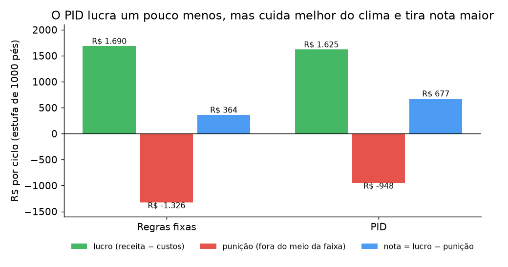

Os controladores de comparação e a nota em R$
A rede aprende a maximizar a nota, e só ela: a nota define o comportamento. Este passo cria a régua (os controladores que a rede precisa vencer), a camada de segurança e a própria nota.
O que foi feito
- Pacote
controle/, com três controladores que seguem a mesma interface da rede,decidir(observacao) → acoes:- Nada: o piso, quanto a estufa sofre sozinha.
- Regras fixas: termostato e umidostato, como a maioria das estufas hoje.
- PID: o controle clássico da indústria.
- A camada de segurança, entre a decisão e o atuador.
- O
ResumoCiclodo contrato e a nota. - 7 testes.
Por quê
P reage ao erro de agora; I, à insistência do erro (a soma no tempo); D, à velocidade da mudança. O D ficou em zero, porque com passo de 10 min ele só amplifica oscilação. Split range é usar uma saída só para dois atuadores em sequência: a demanda de 0 a 1 liga o exaustor, e de 1 a 2 entra a névoa.
O anti-windup impede a integral de acumular quando a saída já está no limite. Sem ele, depois de uma noite fria a integral fica tão negativa que o exaustor demora horas para ligar quando o sol chega.
Ela barra a névoa com o ar acima de 90% de umidade e reduz o LED quando a potência total passa de 82 W/m². O roteiro dizia que, no simulador, ela "só registra"; ela passou a cortar também, para o treino viver as mesmas regras que o hardware. Cada ação barrada custa R$ 0,05, para a rede não usar a segurança como muleta.
A lição do estudo: a nota não punia nada dentro da faixa, e o campeão viveu colado em 25,9 °C, logo abaixo do limite de 26. Aqui a punição cresce devagar do meio até a borda (no máximo R$ 0,01 por passo) e rápido fora dela (R$ 0,50 por meia-faixa).
A umidade não entra na punição, porque o VPD já mede o que ela faz com a planta, e contar as duas puniria o mesmo problema duas vezes.
Mesmos preços (pé a R$ 2,00, R$ 0,85/kWh, mudas, fixos) e mesma régua de peso: o pé de 220 g vale o preço cheio, abaixo de 120 g não vende, e o máximo é +10%. Assim o número do treino e o da tela de Dinheiro batem.
A nota
nota = receita − custos − punição (R$ por ciclo, estufa de 1000 pés)
d = |valor − meio da faixa| ÷ meia largura (0 no meio, 1 na borda)
punição por passo = peso × (0,01 × d² + 0,50 × (d − 1) se d > 1)
pesos: temperatura 1 · VPD 1 · CO₂ 0,5 · cada ação barrada R$ 0,05Números (35 dias, clima ameno, sementes 1 e 2)
| Controlador | Nota (R$) | Massa por pé | Energia | Água da névoa | Punição |
|---|---|---|---|---|---|
| Nada | −8.355 / −7.779 | 8 g | 0 | 0 | ~7.700 |
| Regras fixas | 364 / 393 | 250 g | ~171 kWh | ~3,2 m³ | ~1.320 |
| PID | 677 / 713 | 267 g | ~171 kWh | ~11,9 m³ | ~935 |

O que se aprendeu
Sem aquecedor, as noites de 13 °C deixam a estufa abaixo de 18 °C, e o ar úmido da noite deixa o VPD abaixo de 0,5. Para a evolução isso não pesa, porque ela compara redes no mesmo clima e uma parcela igual para todas não muda a ordem. Mas a rede pode aprender algo útil: fechar a estufa à noite segura o calor.
Como reproduzir
.venv\Scripts\python.exe -m pytest controleEm aberto
Os pesos da punição são escolha nossa, não física: dizem quanto vale em reais o risco que o modelo não simula (queima de borda, fungo). Revisar depois do primeiro treino.
As potências (exaustor ~4,4 W/m², névoa ~2,1 W/m²) são ordem de grandeza com a conta à vista, e os 82 W/m² disponíveis são uma suposição (não há projeto elétrico ainda).
Links
- Commits
2c2fc01,80fc871· PR #31 - Decisão 0005 ·
controle/